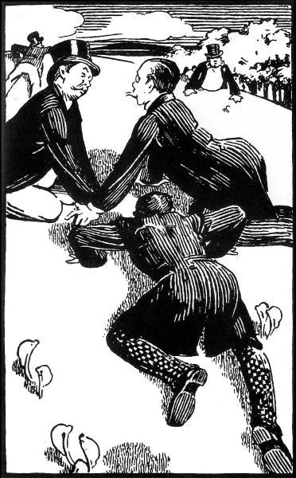

The Napoleon of Notting HillFirst pages
The Napoleon of
Notting Hill
THE NAPOLEON
of
NOTTING HILL
By
GILBERT K. CHESTERTON
With Seven Full-Page Illustrations by
W. GRAHAM ROBERTSON
and a Map of the Seat of War
REV. WILLIAM J. GORMLEY, C. M.
JOHN LANE: THE BODLEY HEAD
LONDON & NEW YORK. MDCCCCIV
Copyright in
U.S.A., 1904
William Clowes & Sons, Limited, London and Beccles.
TO HILAIRE BELLOC
For every tiny town or place
God made the stars especially;
Babies look up with owlish face
And see them tangled in a tree:
You saw a moon from Sussex Downs,
A Sussex moon, untravelled still,
I saw a moon that was the town's,
The largest lamp on Campden Hill.
Yea; Heaven is everywhere at home
The big blue cap that always fits,
And so it is (be calm; they come
To goal at last, my wandering wits),
So is it with the heroic thing;
This shall not end for the world's end,
And though the sullen engines swing,
Be you not much afraid, my friend.
This did not end by Nelson's urn
Where an immortal England sits—
Nor where your tall young men in turn
Drank death like wine at Austerlitz.
And when the pedants bade us mark
What cold mechanic happenings
Must come; our souls said in the dark,
"Belike; but there are likelier things."
Likelier across these flats afar
These sulky levels smooth and free
The drums shall crash a waltz of war
And Death shall dance with Liberty;
Likelier the barricades shall blare
Slaughter below and smoke above,
And death and hate and hell declare
That men have found a thing to love.
Far from your sunny uplands set
I saw the dream; the streets I trod
The lit straight streets shot out and met
The starry streets that point to God.
This legend of an epic hour
A child I dreamed, and dream it still,
Under the great grey water-tower
That strikes the stars on Campden Hill.
G. K. C.
ILLUSTRATIONS
Book I
THE NAPOLEON OF NOTTING HILL
Chapter I—Introductory Remarks on the Art of Prophecy
The human race, to which so many of my readers belong, has been playing at children's games from the beginning, and will probably do it till the end, which is a nuisance for the few people who grow up. And one of the games to which it is most attached is called "Keep to-morrow dark," and which is also named (by the rustics in Shropshire, I have no doubt) "Cheat the Prophet." The players listen very carefully and respectfully to all that the clever men have to say about what is to happen in the next generation. The players then wait until all the clever men are dead, and bury them nicely. They then go and do something else. That is all. For a race of simple tastes, however, it is great fun.
For human beings, being children, have the childish wilfulness and the childish secrecy. And they never have from the beginning of the world done what the wise men have seen to be inevitable. They stoned the false prophets, it is said; but they could have stoned true prophets with a greater and juster enjoyment. Individually, men may present a more or less rational appearance, eating, sleeping, and scheming. But humanity as a whole is changeful, mystical, fickle, delightful. Men are men, but Man is a woman.
But in the beginning of the twentieth century the game of Cheat the Prophet was made far more difficult than it had ever been before. The reason was, that there were so many prophets and so many prophecies, that it was difficult to elude all their ingenuities. When a man did something free and frantic and entirely his own, a horrible thought struck him afterwards; it might have been predicted. Whenever a duke climbed a lamp-post, when a dean got drunk, he could not be really happy, he could not be certain that he was not fulfilling some prophecy. In the beginning of the twentieth century you could not see the ground for clever men. They were so common that a stupid man was quite exceptional, and when they found him, they followed him in crowds down the street and treasured him up and gave him some high post in the State. And all these clever men were at work giving accounts of what would happen in the next age, all quite clear, all quite keen-sighted and ruthless, and all quite different. And it seemed that the good old game of hoodwinking your ancestors could not really be managed this time, because the ancestors neglected meat and sleep and practical politics, so that they might meditate day and night on what their descendants would be likely to do.
But the way the prophets of the twentieth century went to work was this. They took something or other that was certainly going on in their time, and then said that it would go on more and more until something extraordinary happened. And very often they added that in some odd place that extraordinary thing had happened, and that it showed the signs of the times.
Thus, for instance, there were Mr. H. G. Wells and others, who thought that science would take charge of the future; and just as the motor-car was quicker than the coach, so some lovely thing would be quicker than the motor-car; and so on for ever. And there arose from their ashes Dr. Quilp, who said that a man could be sent on his machine so fast round the world that he could keep up a long, chatty conversation in some old-world village by saying a word of a sentence each time he came round. And it was said that the experiment had been tried on an apoplectic old major, who was sent round the world so fast that there seemed to be (to the inhabitants of some other star) a continuous band round the earth of white whiskers, red complexion and tweeds—a thing like the ring of Saturn.
Then there was the opposite school. There was Mr. Edward Carpenter, who thought we should in a very short time return to Nature, and live simply and slowly as the animals do. And Edward Carpenter was followed by James Pickie, D.D. (of Pocohontas College), who said that men were immensely improved by grazing, or taking their food slowly and continuously, after the manner of cows. And he said that he had, with the most encouraging results, turned city men out on all fours in a field covered with veal cutlets. Then Tolstoy and the Humanitarians said that the world was growing more merciful, and therefore no one would ever desire to kill. And Mr. Mick not only became a vegetarian, but at length declared vegetarianism doomed ("shedding," as he called it finely, "the green blood of the silent animals"), and predicted that men in a better age would live on nothing but salt. And then came the pamphlet from Oregon (where the thing was tried), the pamphlet called "Why should Salt suffer?" and there was more trouble.

And on the other hand, some people were predicting that the lines of kinship would become narrower and sterner. There was Mr. Cecil Rhodes, who thought that the one thing of the future was the British Empire, and that there would be a gulf between those who were of the Empire and those who were not, between the Chinaman in Hong Kong and the Chinaman outside, between the Spaniard on the Rock of Gibraltar and the Spaniard off it, similar to the gulf between man and the lower animals. And in the same way his impetuous friend, Dr. Zoppi ("the Paul of Anglo-Saxonism"), carried it yet further, and held that, as a result of this view, cannibalism should be held to mean eating a member of the Empire, not eating one of the subject peoples, who should, he said, be killed without needless pain. His horror at the idea of eating a man in British Guiana showed how they misunderstood his stoicism who thought him devoid of feeling. He was, however, in a hard position; as it was said that he had attempted the experiment, and, living in London, had to subsist entirely on Italian organ-grinders. And his end was terrible, for just when he had begun, Sir Paul Swiller read his great paper at the Royal Society, proving that the savages were not only quite right in eating their enemies, but right on moral and hygienic grounds, since it was true that the qualities of the enemy, when eaten, passed into the eater. The notion that the nature of an Italian organ-man was irrevocably growing and burgeoning inside him was almost more than the kindly old professor could bear.
There was Mr. Benjamin Kidd, who said that the growing note of our race would be the care for and knowledge of the future. His idea was developed more powerfully by William Borker, who wrote that passage which every schoolboy knows by heart, about men in future ages weeping by the graves of their descendants, and tourists being shown over the scene of the historic battle which was to take place some centuries afterwards.
And Mr. Stead, too, was prominent, who thought that England would in the twentieth century be united to America; and his young lieutenant, Graham Podge, who included the states of France, Germany, and Russia in the American Union, the State of Russia being abbreviated to Ra.
There was Mr. Sidney Webb, also, who said that the future would see a continuously increasing order and neatness in the life of the people, and his poor friend Fipps, who went mad and ran about the country with an axe, hacking branches off the trees whenever there were not the same number on both sides.
All these clever men were prophesying with every variety of ingenuity what would happen soon, and they all did it in the same way, by taking something they saw "going strong," as the saying is, and carrying it as far as ever their imagination could stretch. This, they said, was the true and simple way of anticipating the future. "Just as," said Dr. Pellkins, in a fine passage,—"just as when we see a pig in a litter larger than the other pigs, we know that by an unalterable law of the Inscrutable it will some day be larger than an elephant,—just as we know, when we see weeds and dandelions growing more and more thickly in a garden, that they must, in spite of all our efforts, grow taller than the chimney-pots and swallow the house from sight, so we know and reverently acknowledge, that when any power in human politics has shown for any period of time any considerable activity, it will go on until it reaches to the sky."
And it did certainly appear that the prophets had put the people (engaged in the old game of Cheat the Prophet) in a quite unprecedented difficulty. It seemed really hard to do anything without fulfilling some of their prophecies.
But there was, nevertheless, in the eyes of labourers in the streets, of peasants in the fields, of sailors and children, and especially women, a strange look that kept the wise men in a perfect fever of doubt. They could not fathom the motionless mirth in their eyes. They still had something up their sleeve; they were still playing the game of Cheat the Prophet.
Then the wise men grew like wild things, and swayed hither and thither, crying, "What can it be? What can it be? What will London be like a century hence? Is there anything we have not thought of? Houses upside down—more hygienic, perhaps? Men walking on hands—make feet flexible, don't you know? Moon ... motor-cars ... no heads...." And so they swayed and wondered until they died and were buried nicely.
Then the people went and did what they liked. Let me no longer conceal the painful truth. The people had cheated the prophets of the twentieth century. When the curtain goes up on this story, eighty years after the present date, London is almost exactly like what it is now.
That is the end of the first pages. To keep reading, download the whole book, free:
Which one? The PDF opens straight away in the browser, on any phone or computer. The EPUB is saved in Downloads and is read with a reading app (Google Play Books on Android, Books on iPhone, Kindle or Kobo), which lets you enlarge the text.